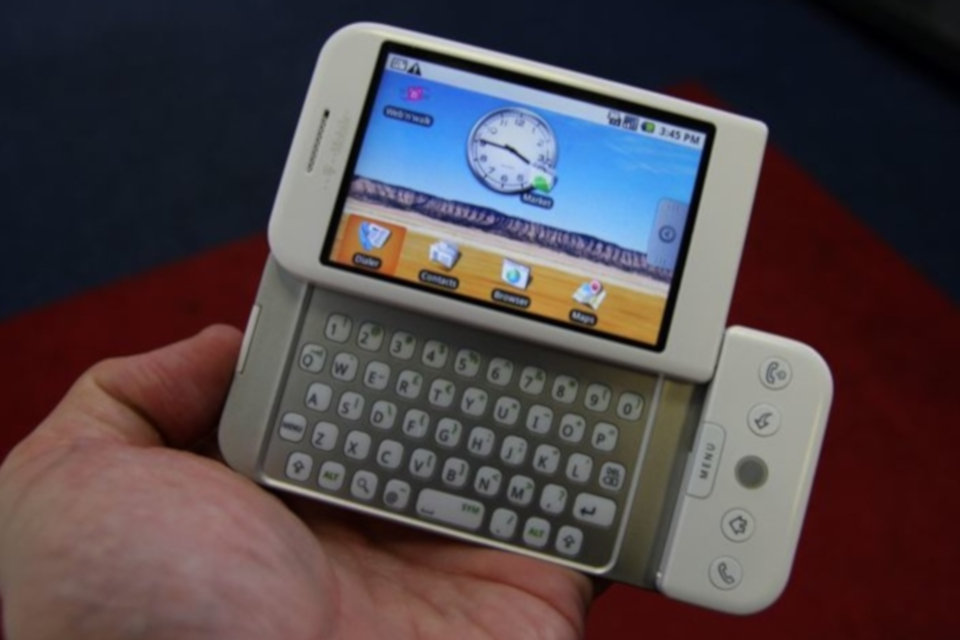

Entendendo sobre o assunto
Android é um sistema operacional baseado no núcleo Linux, projetado principalmente para dispositivos eletrônicos móveis (como smartphones e tablets) com tela sensível ao toque ou interface de usuário baseada na manipulação direta; desenvolvido por um consórcio de desenvolvedores conhecido como Open Handset Alliance, sendo o principal colaborador o Google. Possui interface específica para aparelho televisivo (Android TV), carros (Android Auto) e relógios inteligentes (Wear OS). O sistema operacional utiliza-se da tela sensível ao toque para que o usuário possa manipular objetos virtuais, como o teclado virtual. Apesar do foco ser dispositivos com tela sensível ao toque, também é utilizado em consoles de videogames, câmeras digitais, computadores e outros dispositivos eletrônicos.
Entendendo o sistema operacional
O Android é o sistema operacional móvel mais utilizado do mundo em 2013, possuía a maior percentagem das vendas mundiais desse tipo de sistema. Dispositivos com o sistema Android vendem mais que eletrônicos com Windows, iOS e macOS combinados, com vendas em 2012, 2013 e 2014 perto da base de computadores do mundo. Em 2021, a loja de aplicativos Google Play Store possui mais de 2 milhões de aplicativos disponíveis. Uma pesquisa com programadores entre abril e maio de 2013 informa que 71% destes desenvolviam para o Android. Na conferência anual Google I/O de 2014, a companhia revelou que existem mais de 1 bilhão de usuários Android ativos. Em junho de 2013, este número era de 538 milhões. O maior número de usuários no mundo também reflete no número de ataques de hackers no sistema, com cerca de 5 mil novos malwares sendo criados todos os dias para usuários Android.
O código do sistema operacional é disponibilizado pelo Google sob licença de código aberto, apesar de a maior parte dos dispositivos ser lançada com uma combinação de software livre e software privado. Inicialmente foi desenvolvido pela empresa Android, Inc., a qual o Google dava suporte financeiramente. Foi adquirida pelo Google em 2005 e revelado em 2007 junto com a fundação da Open Handset Alliance — consórcio entre empresas de hardware, software e telecomunicações com o intuito de desenvolver a indústria de dispositivos móveis.[27]
O Android é muito popular entre empresas de tecnologia que buscam um software pronto, de baixo custo e personalizável para dispositivos de alta tecnologia. A natureza do software de código aberto do sistema operacional tem encorajado uma grande comunidade de programadores e entusiastas a colocar uma fundação para o desenvolvimento de projetos feitos pela própria comunidade que adicionam recursos para usuários mais avançados, ou trazem o Android para dispositivos que inicialmente não foram lançados com a plataforma. O sucesso do SO fez dele um alvo para disputas de patente na chamada "guerra de smartphones" entre empresas de tecnologia. A versão mais recente é o Android 14, lançado em 04 de outubro de 2023.
Uma das novas funções do Android 13 é a possibilidade de limitar o acesso de aplicativos à mídias como fotos, vídeos e áudios. Outra característica desse sistema é o Bluetooth Low Energy (LE) que, além de reduzir o delay reproduções via Bluetooth, diminui o consumo da bateria em 10%.
Atualmente, o Android 13 está presente em 5.2% dos equipamentos Android.[33]
